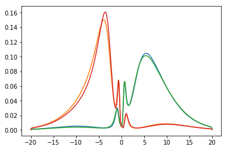
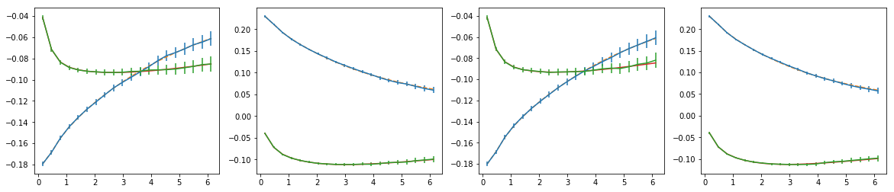
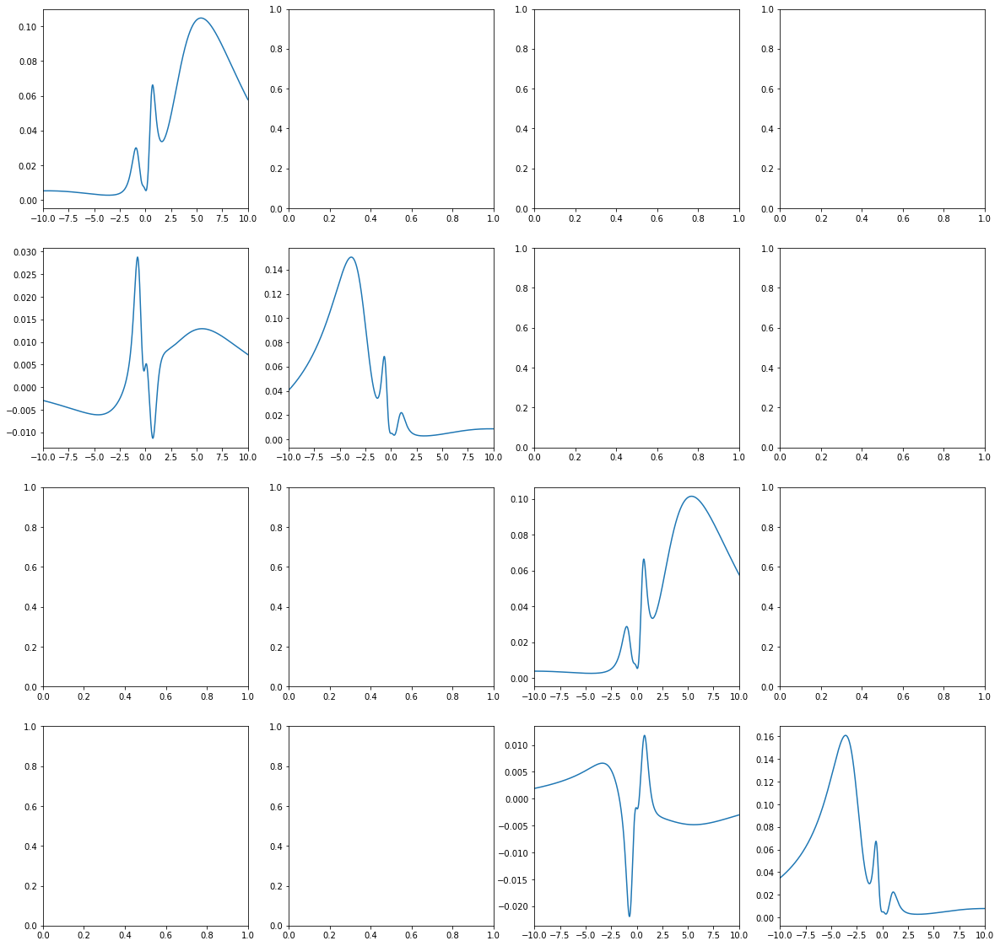
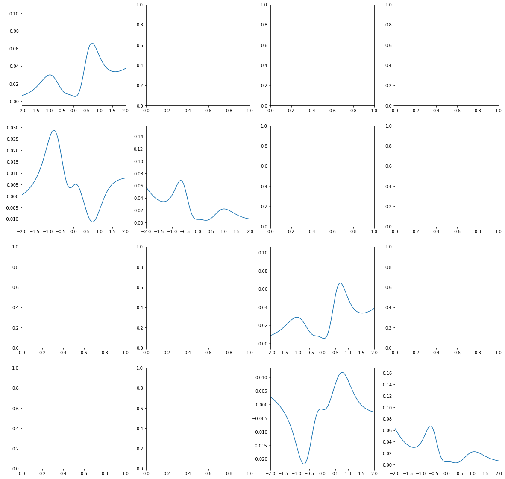
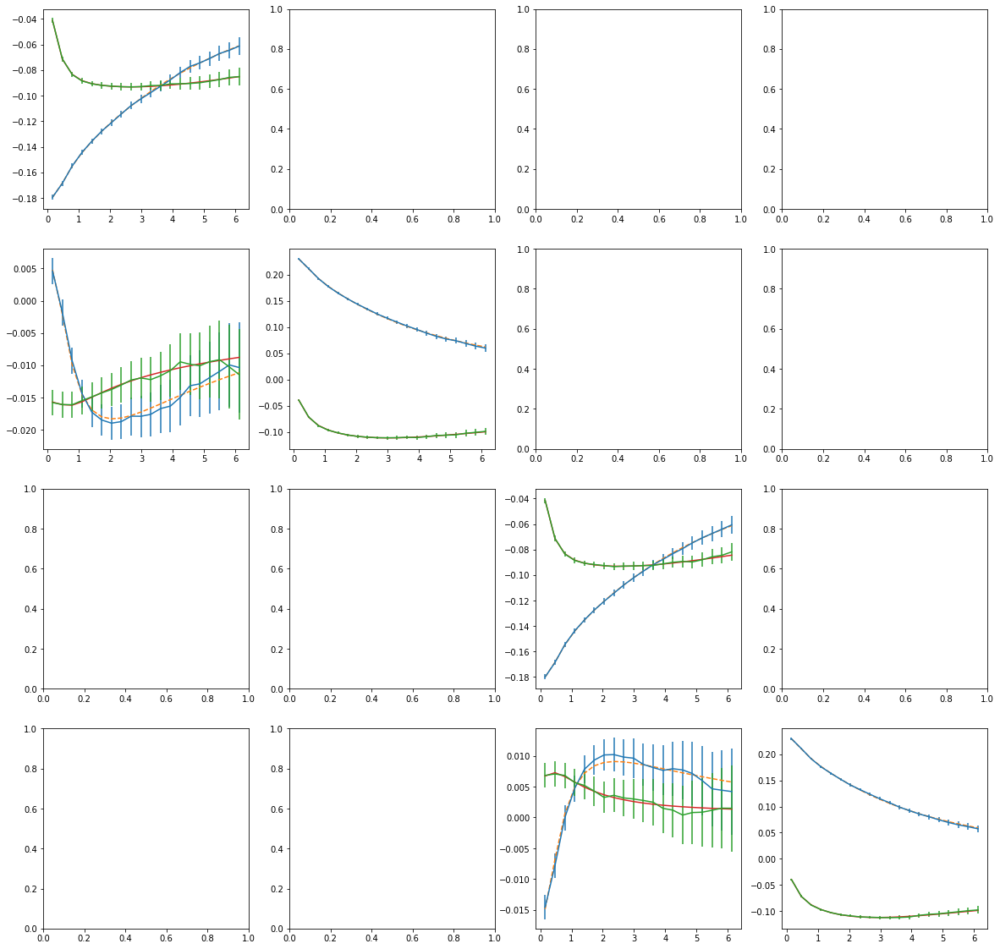

[1]:
import sys
import numpy as np
import matplotlib.pyplot as plt
import h5py
%matplotlib inline
sys.path.insert(0, '/home/josef/Projects/ana_cont_offdiag')
from ana_cont import continuation as cont
[2]:
f = h5py.File('/home/josef/Downloads/sigma_cont.h5','r')
tail_0 = f['current_sigma/site_0/tail_0/value'][()]
tail_1 = f['current_sigma/site_0/tail_1/value'][()]
niw = 20
n_orb = 4
siw = (f['current_sigma/site_0/values/value'][...,:niw] - tail_0[:,:,None])
print(tail_0.real)
print(tail_0.imag)
for i in range(n_orb):
siw[i,i] /= tail_1[i,i]
[[ 3.07701521e+000 -3.57758950e-001 -2.57631506e-134 7.34372271e-134]
[-3.57758950e-001 3.92767686e+000 8.18214316e-134 9.03383479e-134]
[-2.57631506e-134 8.18214316e-134 3.07281864e+000 3.69826955e-001]
[ 7.34372271e-134 9.03383479e-134 3.69826955e-001 3.93201167e+000]]
[[ 0.00000000e+000 -6.10601401e-003 9.95714789e-134 1.46221491e-134]
[ 6.10601401e-003 0.00000000e+000 -3.13486025e-135 -3.23761927e-133]
[-9.95714789e-134 3.13486025e-135 0.00000000e+000 1.61150603e-003]
[-1.46221491e-134 3.23761927e-133 -1.61150603e-003 0.00000000e+000]]
[3]:
beta = 20.
iw = np.pi/beta * (2.*np.arange(niw) + 1.)
#wgrid = np.linspace(-15., 15., num=1001, endpoint=True)
wgrid = 20. * np.tan(np.linspace(-np.pi/2.5, np.pi/2.5, num=1001, endpoint=True))/np.tan(np.pi/2.5)
n_orb = 4
model_diag = np.exp(-wgrid**2/(2.*8**2))
model_diag /= np.trapz(model_diag, wgrid)
errfac = 0.005
err = 0.002 + errfac * iw**2./iw[-1]**2
[12]:
sol_diag=[]
for i in range(n_orb):
probl = cont.AnalyticContinuationProblem(im_axis=iw, re_axis=wgrid, im_data=siw[i,i], kernel_mode='freq_fermionic')
sol_diag.append(
probl.solve(method='maxent_svd',
model=model_diag,
stdev=err,
alpha_determination='classic',
offdiag=False, preblur=True, blur_width=0.15)[0])
spectral points: 1001
data points on imaginary axis: 40
significant singular values: 33
U (40, 33)
V (1001, 33)
Xi (33,)
Precomputation of coefficient matrices
Solving...
log10(alpha)=5.0000 chi2=1.2781e+04 S=-5.1245e-02 tr=1.5035 conv=0.000147, nfev=6, norm=0.9734330576172616
log10(alpha)=4.0000 chi2=1.4021e+03 S=-2.0553e-01 tr=3.1773 conv=0.000773, nfev=7, norm=0.9929455056439241
log10(alpha)=3.0000 chi2=1.1759e+02 S=-3.6065e-01 tr=5.2933 conv=0.00734, nfev=9, norm=1.024717439821001
log10(alpha)=2.0000 chi2=2.0058e+01 S=-4.7197e-01 tr=7.2876 conv=0.0772, nfev=50, norm=1.0518405335495757
log10(alpha)=1.0000 chi2=9.5092e+00 S=-5.2460e-01 tr=9.1285 conv=0.87, nfev=178, norm=1.0578874046384867
log10(alpha)=0.0000 chi2=9.4061e+00 S=-5.4116e-01 tr=10.8394 conv=10.0, nfev=833, norm=1.0548990041585238
prediction for optimal alpha: 8.770383632550427 log10(alphaOpt)= 0.9430185906129931
log10(alpha)=0.9430 chi2=9.4239e+00 S=-5.2608e-01 tr=9.2276 conv=1.0, nfev=32, norm=1.0576478299547032
log10(alpha)=0.9431 chi2=9.4239e+00 S=-5.2608e-01 tr=9.2275 conv=1.0, nfev=3, norm=1.0576480417369925
log10(alpha)=0.9430 chi2=9.4238e+00 S=-5.2608e-01 tr=9.2276 conv=1.0, nfev=3, norm=1.0576477949425667
final optimal alpha: 8.770222144878524 log10(alpha_opt)= 0.9430105939444977
log10(alpha)=0.9430 chi2=9.4238e+00 S=-5.2608e-01 tr=9.2276 conv=1.0, nfev=2, norm=1.0576477949472503
spectral points: 1001
data points on imaginary axis: 40
significant singular values: 33
U (40, 33)
V (1001, 33)
Xi (33,)
Precomputation of coefficient matrices
Solving...
log10(alpha)=5.0000 chi2=1.6835e+04 S=-7.2357e-02 tr=1.5110 conv=0.000104, nfev=6, norm=1.0045079588603663
log10(alpha)=4.0000 chi2=1.4840e+03 S=-2.7519e-01 tr=3.0397 conv=0.000552, nfev=8, norm=1.0741086994171718
log10(alpha)=3.0000 chi2=7.2187e+01 S=-4.2955e-01 tr=5.2505 conv=0.00611, nfev=9, norm=1.1334231492523565
log10(alpha)=2.0000 chi2=1.3990e+01 S=-4.9147e-01 tr=7.3051 conv=0.0743, nfev=45, norm=1.1515260487143943
log10(alpha)=1.0000 chi2=7.4423e+00 S=-5.3702e-01 tr=9.0739 conv=0.845, nfev=317, norm=1.121060616794459
log10(alpha)=0.0000 chi2=5.0411e+00 S=-6.3052e-01 tr=10.6771 conv=8.47, nfev=1514, norm=1.0704217326768934
prediction for optimal alpha: 8.449724278766524 log10(alphaOpt)= 0.9268425378060361
log10(alpha)=0.9268 chi2=7.2510e+00 S=-5.4266e-01 tr=9.1854 conv=1.0, nfev=53, norm=1.1174877868150204
log10(alpha)=0.9269 chi2=7.2512e+00 S=-5.4266e-01 tr=9.1853 conv=1.0, nfev=3, norm=1.1174901838891809
log10(alpha)=0.9275 chi2=7.2527e+00 S=-5.4261e-01 tr=9.1843 conv=1.0, nfev=4, norm=1.1175218227131722
log10(alpha)=0.9275 chi2=7.2527e+00 S=-5.4261e-01 tr=9.1843 conv=1.0, nfev=3, norm=1.1175218724810918
final optimal alpha: 8.463172603331893 log10(alpha_opt)= 0.9275331982435974
log10(alpha)=0.9275 chi2=7.2527e+00 S=-5.4261e-01 tr=9.1843 conv=1.0, nfev=2, norm=1.1175218725540146
spectral points: 1001
data points on imaginary axis: 40
significant singular values: 33
U (40, 33)
V (1001, 33)
Xi (33,)
Precomputation of coefficient matrices
Solving...
log10(alpha)=5.0000 chi2=1.2760e+04 S=-5.1240e-02 tr=1.5035 conv=0.000147, nfev=6, norm=0.9733168663603687
log10(alpha)=4.0000 chi2=1.4007e+03 S=-2.0513e-01 tr=3.1759 conv=0.000774, nfev=8, norm=0.9921298996734302
log10(alpha)=3.0000 chi2=1.1962e+02 S=-3.6007e-01 tr=5.2945 conv=0.00735, nfev=9, norm=1.0230007843851254
log10(alpha)=2.0000 chi2=2.0087e+01 S=-4.7445e-01 tr=7.2887 conv=0.0768, nfev=58, norm=1.0478317016670569
log10(alpha)=1.0000 chi2=1.0496e+01 S=-5.3225e-01 tr=9.1026 conv=0.855, nfev=160, norm=1.0432561806063527
log10(alpha)=0.0000 chi2=8.9395e+00 S=-5.5718e-01 tr=10.8016 conv=9.69, nfev=1327, norm=1.0129822061529077
prediction for optimal alpha: 8.620409924289554 log10(alphaOpt)= 0.9355279182172912
log10(alpha)=0.9355 chi2=1.0449e+01 S=-5.3418e-01 tr=9.2140 conv=1.0, nfev=37, norm=1.0418251926447
log10(alpha)=0.9356 chi2=1.0449e+01 S=-5.3418e-01 tr=9.2139 conv=1.0, nfev=3, norm=1.0418263017918796
log10(alpha)=0.9357 chi2=1.0449e+01 S=-5.3418e-01 tr=9.2136 conv=1.0, nfev=3, norm=1.0418295055977151
log10(alpha)=0.9357 chi2=1.0449e+01 S=-5.3418e-01 tr=9.2136 conv=1.0, nfev=3, norm=1.0418295070298933
final optimal alpha: 8.624152934550537 log10(alpha_opt)= 0.9357164493782012
log10(alpha)=0.9357 chi2=1.0449e+01 S=-5.3418e-01 tr=9.2136 conv=1.0, nfev=2, norm=1.0418295070303663
spectral points: 1001
data points on imaginary axis: 40
significant singular values: 33
U (40, 33)
V (1001, 33)
Xi (33,)
Precomputation of coefficient matrices
Solving...
log10(alpha)=5.0000 chi2=1.6486e+04 S=-7.1620e-02 tr=1.5136 conv=0.000106, nfev=6, norm=1.004842175566643
log10(alpha)=4.0000 chi2=1.4103e+03 S=-2.6990e-01 tr=3.0440 conv=0.000564, nfev=8, norm=1.0727392557118682
log10(alpha)=3.0000 chi2=6.5512e+01 S=-4.1484e-01 tr=5.2563 conv=0.00634, nfev=9, norm=1.1259922781149478
log10(alpha)=2.0000 chi2=1.4850e+01 S=-4.6872e-01 tr=7.3071 conv=0.0779, nfev=44, norm=1.1306146233435483
log10(alpha)=1.0000 chi2=9.1830e+00 S=-5.2731e-01 tr=9.0260 conv=0.856, nfev=313, norm=1.0770489759184905
log10(alpha)=0.0000 chi2=6.5274e+00 S=-6.6891e-01 tr=10.5576 conv=7.89, nfev=1590, norm=0.9978333458785626
prediction for optimal alpha: 8.509942157869958 log10(alphaOpt)= 0.9299266081923117
log10(alpha)=0.9299 chi2=9.0317e+00 S=-5.3505e-01 tr=9.1267 conv=1.0, nfev=63, norm=1.0717342252768474
log10(alpha)=0.9300 chi2=9.0318e+00 S=-5.3505e-01 tr=9.1267 conv=1.0, nfev=3, norm=1.0717379366253015
log10(alpha)=0.9309 chi2=9.0337e+00 S=-5.3494e-01 tr=9.1253 conv=1.0, nfev=4, norm=1.0718096074817787
log10(alpha)=0.9309 chi2=9.0337e+00 S=-5.3494e-01 tr=9.1253 conv=1.0, nfev=3, norm=1.0718097652750695
final optimal alpha: 8.529321505266616 log10(alpha_opt)= 0.9309144850668738
log10(alpha)=0.9309 chi2=9.0337e+00 S=-5.3494e-01 tr=9.1253 conv=1.0, nfev=3, norm=1.0718097656064705
[13]:
for i in range(n_orb):
plt.plot(wgrid, sol_diag[i].A_opt)
plt.show()
fig,ax = plt.subplots(ncols=4, nrows=1, figsize=(20,4))
for i in range(n_orb):
ax[i].errorbar(iw, siw[i,i].real, yerr=err)
ax[i].plot(iw, sol_diag[i].backtransform.real, ls='--')
ax[i].errorbar(iw, siw[i,i].imag, yerr=err)
ax[i].plot(iw, sol_diag[i].backtransform.imag, ls='-')
plt.show()


[14]:
sol_offd = []
for i in range(n_orb):
sol_offd.append([])
for j in range(i):
s = siw[i,j]
if np.any(np.abs(s)>0.00001) and np.all(np.isfinite(s)):
model = np.sqrt(sol_diag[i].A_opt * sol_diag[j].A_opt)
probl = cont.AnalyticContinuationProblem(im_axis=iw, re_axis=wgrid, im_data=s, kernel_mode='freq_fermionic')
sol_offd[i].append(
probl.solve(method='maxent_svd',
model=model,
stdev=err,
alpha_determination='classic',
offdiag=True, preblur=True, blur_width=0.15)[0])
else:
sol_offd[i].append(None)
spectral points: 1001
data points on imaginary axis: 40
significant singular values: 33
U (40, 33)
V (1001, 33)
Xi (33,)
Precomputation of coefficient matrices
Solving...
log10(alpha)=5.0000 chi2=4.2574e+02 S=-8.7749e-04 tr=1.4708 conv=0.00838, nfev=4, norm=0.02019629973793531
log10(alpha)=4.0000 chi2=8.6548e+01 S=-6.4110e-03 tr=3.6628 conv=0.0286, nfev=6, norm=0.04951737507350307
log10(alpha)=3.0000 chi2=7.8731e+00 S=-1.6561e-02 tr=5.8930 conv=0.178, nfev=10, norm=0.07759943758901643
log10(alpha)=2.0000 chi2=3.6319e+00 S=-2.2357e-02 tr=7.9115 conv=1.77, nfev=24, norm=0.09048498120021867
prediction for optimal alpha: 177.18046504192972 log10(alphaOpt)= 2.24841583723403
log10(alpha)=2.2484 chi2=3.8485e+00 S=-2.1485e-02 tr=7.4308 conv=0.976, nfev=5, norm=0.08857130752069953
log10(alpha)=2.2485 chi2=3.8486e+00 S=-2.1485e-02 tr=7.4307 conv=0.976, nfev=3, norm=0.08857091584978968
log10(alpha)=2.2380 chi2=3.8407e+00 S=-2.1526e-02 tr=7.4513 conv=1.0, nfev=4, norm=0.08866427267997387
log10(alpha)=2.2382 chi2=3.8409e+00 S=-2.1525e-02 tr=7.4508 conv=1.0, nfev=3, norm=0.08866197774752041
log10(alpha)=2.2382 chi2=3.8409e+00 S=-2.1525e-02 tr=7.4508 conv=1.0, nfev=3, norm=0.08866203269544783
log10(alpha)=2.2382 chi2=3.8409e+00 S=-2.1525e-02 tr=7.4508 conv=1.0, nfev=3, norm=0.08866203272843952
final optimal alpha: 173.07466648995612 log10(alpha_opt)= 2.2382335034109544
log10(alpha)=2.2382 chi2=3.8409e+00 S=-2.1525e-02 tr=7.4508 conv=1.0, nfev=2, norm=0.08866203272843905
spectral points: 1001
data points on imaginary axis: 40
significant singular values: 33
U (40, 33)
V (1001, 33)
Xi (33,)
Precomputation of coefficient matrices
Solving...
log10(alpha)=5.0000 chi2=1.3992e+02 S=-1.7671e-04 tr=1.4568 conv=0.0412, nfev=4, norm=-0.006627371452169109
log10(alpha)=4.0000 chi2=3.7768e+01 S=-2.0063e-03 tr=3.6383 conv=0.0907, nfev=6, norm=-0.01376891622820896
log10(alpha)=3.0000 chi2=4.7216e+00 S=-6.2598e-03 tr=5.8582 conv=0.468, nfev=8, norm=-0.015435203463153836
log10(alpha)=2.0000 chi2=3.1406e+00 S=-9.7528e-03 tr=7.8808 conv=4.04, nfev=12, norm=-0.008108885418126724
prediction for optimal alpha: 444.33963950083614 log10(alphaOpt)= 2.6477150583423152
log10(alpha)=2.6477 chi2=3.2904e+00 S=-7.6920e-03 tr=6.5913 conv=0.964, nfev=5, norm=-0.013628133834085985
log10(alpha)=2.6478 chi2=3.2905e+00 S=-7.6918e-03 tr=6.5912 conv=0.964, nfev=3, norm=-0.013628429427209786
log10(alpha)=2.6300 chi2=3.2663e+00 S=-7.7566e-03 tr=6.6277 conv=1.0, nfev=4, norm=-0.013506660828755235
log10(alpha)=2.6307 chi2=3.2672e+00 S=-7.7540e-03 tr=6.6262 conv=1.0, nfev=3, norm=-0.013511691603693018
log10(alpha)=2.6307 chi2=3.2672e+00 S=-7.7541e-03 tr=6.6263 conv=1.0, nfev=3, norm=-0.013511497641899843
log10(alpha)=2.6307 chi2=3.2672e+00 S=-7.7541e-03 tr=6.6263 conv=1.0, nfev=3, norm=-0.013511497328437497
final optimal alpha: 427.2764523324309 log10(alpha_opt)= 2.630708959037927
log10(alpha)=2.6307 chi2=3.2672e+00 S=-7.7541e-03 tr=6.6263 conv=1.0, nfev=2, norm=-0.013511497328457814
[15]:
fig, ax = plt.subplots(nrows=n_orb, ncols=n_orb, figsize=(20,20))
for i in range(n_orb):
ax[i,i].plot(wgrid, sol_diag[i].A_opt)
ax[i,i].set_xlim(-10.,10.)
for j in range(i):
if sol_offd[i][j] is not None:
ax[i,j].plot(wgrid, sol_offd[i][j].A_opt)
ax[i,j].set_xlim(-10.,10.)
plt.show()

[16]:
fig, ax = plt.subplots(nrows=n_orb, ncols=n_orb, figsize=(20,20))
for i in range(n_orb):
ax[i,i].plot(wgrid, sol_diag[i].A_opt)
ax[i,i].set_xlim(-2.,2.)
for j in range(i):
if sol_offd[i][j] is not None:
ax[i,j].plot(wgrid, sol_offd[i][j].A_opt)
ax[i,j].set_xlim(-2.,2.)
plt.show()

[17]:
fig, ax = plt.subplots(nrows=n_orb, ncols=n_orb, figsize=(20,20))
for i in range(n_orb):
ax[i,i].errorbar(iw, siw[i,i].real, yerr=err)
ax[i,i].plot(iw, sol_diag[i].backtransform.real, ls='--')
ax[i,i].errorbar(iw, siw[i,i].imag, yerr=err)
ax[i,i].plot(iw, sol_diag[i].backtransform.imag, ls='-')
for j in range(i):
if sol_offd[i][j] is not None:
ax[i,j].errorbar(iw, siw[i,j].real, yerr=err)
ax[i,j].plot(iw, sol_offd[i][j].backtransform.real, ls='--')
ax[i,j].errorbar(iw, siw[i,j].imag, yerr=err)
ax[i,j].plot(iw, sol_offd[i][j].backtransform.imag, ls='-')
plt.show()

[ ]: